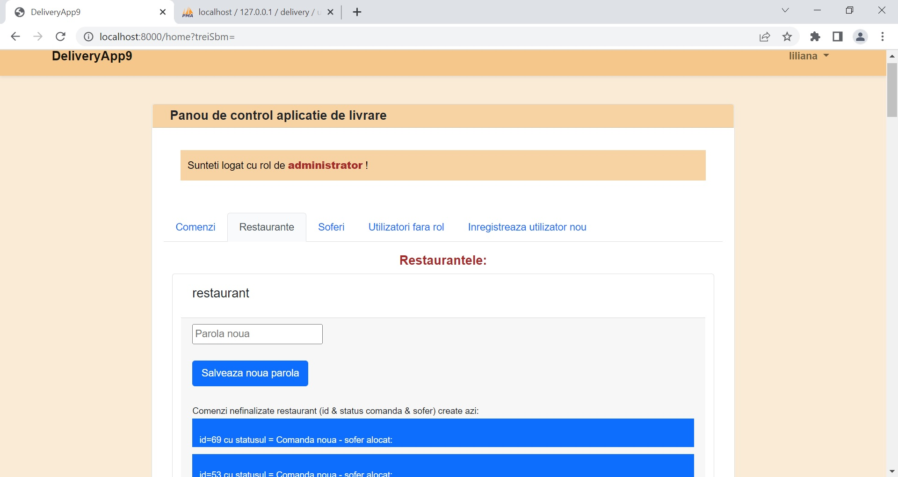

Descrierea:
Proiectul Delivery App este realizat in Laravel 9 si implementeaza managementul unei firme de livrari care are angajati un numar de soferi
care duc de la restaurante la clienti diverse comenzi. Aplicatia este privata astfel ca ea afiseaza in prima pagina butonul de login.
Administratorul este cel care introduce restaurantele si soferii in sistem. Exista in pagina de home a administratorului taburi pentru
comenzi , restaurante , soferi, inregistrare user nou si alocare rol pentru un user deja creat.
In functie de rolul utilizatorului creat pagina home a aplicatiei se modifica. Astfel ca pentru un restaurant
se vor vedea comenzile acelui restaurant cu posibilitatea de a crea o noua comanda (in descrierea comenzii sunt trecute detaliile despre clientul final si produse, preturi etc)
Soferul logat va vedea o serie de date referitoare la activitatea sa, precum si comenzile nou create care nu au fost alocate altui sofer si pot fi preluate de acesta.
De asemenea soferul poate seta o serie de statusuri comenzii preluate pana la statusul de comanda finalizata.
Administratorul urmareste in pagina sa (home) activitatea soferilor si a restaurantelor si comenzile noi.
O problema intalnita in acest proiect este actualizarea refreshul automat al datelor astfel incat sa se actualizeze automat
statusurile comenzilor si alte date (fluxul aplicatiei) fara a fi nevoie de refresh. Un astfel de sistem de notificare de exemplu atunci cand apare o comanda noua
este in afara scopului proiectului de fata dar s-ar putea face cu un alt server utilizat pentru managementul notificarilor.
Alte imagini din acest proiect:
